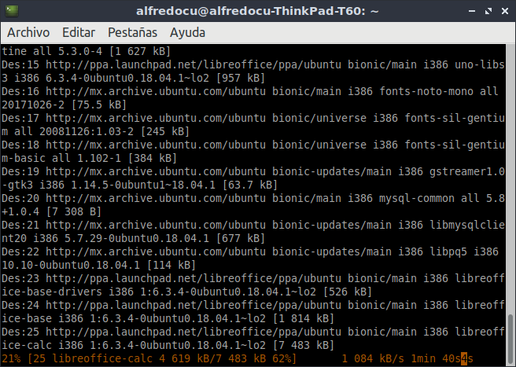
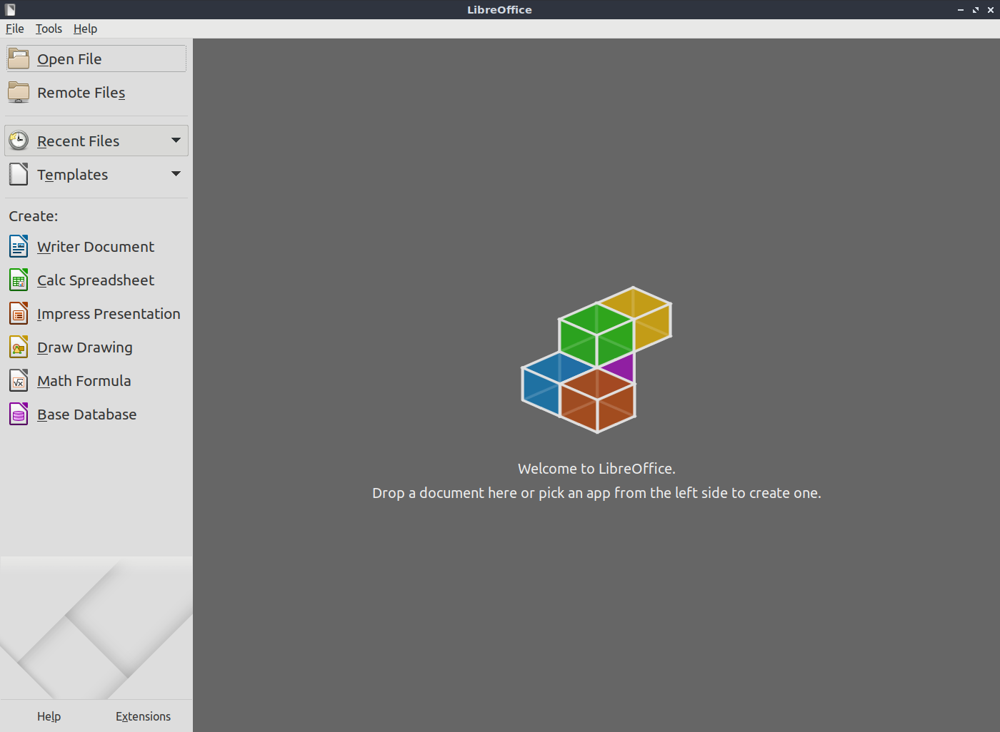

LibreOffice en Windows y en Linux
LibreOffice en Windows
Vamos a la pagina oficial de LibreOffice, donde encontraremos más información sobre el programa y los beneficios y ventajas que existen sobre Microsoft Office, después damos clic en “Descargas”, y elegimos la primera opción “Descargar LibreOffice”.

Nos mostrara de forma automática el tipo de sistema que tenemos el cual es un Windows 7 de 32 Bits. Damos clic en “Descargar” la versión 6.4.0.3.

Empezara la descarga, en nuestro caso se guarda el instalador en nuestro escritorio, después damos doble clic sobre el instalador.

Nos abrirá la siguiente ventana, damos clic en “Ejecutar”.

Nos dará la bienvenida al asistente de instalación de LibreOffice, damos clic en “Siguiente”.

Elegimos la opción de “típica” y clic en “Siguiente”.

En nuestro caso creamos un acceso directo en el escritorio y damos clic en “Instalar”.

Comenzará la instalación.

Después de unos minutos, se completó la instalación, damos clic en “Finalizar”.

En nuestro escritorio se creó un acceso directo damos doble clic sobre el icono.

Se nos abrirá la primera vista de LibreOffice, la cual nos mostrará varias funcionalidades que podemos hacer desde crear un nuevo documento, abrir archivo, etc.
Damos clic en “Documento de Writer”.

Nos abrirá nuestra área de trabajo, con algunos consejos que nos ofrece la comunidad de LibreOffice.

Listo hemos descargado e instalado LibreOffice de forma exitosa en Windows.
LibreOffice en Linux
LibreOffice es muy popular entre la comunidad de Linux y varias distribuciones lo instala por defecto como Linux Mint o Ubuntu.
Hay muchas maneras de descargar e instalar LibreOffice:
- Desde la terminal.
- Por medio de nuestro gestor de Software o tienda.
- Ir a la pagina oficial y descargar el archivo .deb o .rpm.
Realice la descarga e instalación de las tres formas para determinar cuál es la mejor para este tutorial.
En este tutorial elegimos la primera opción por varias razones:
- Es rápido y muy fácil de instalar, evita que naveguemos por el sitio oficial y tardar más tiempo al descargar e instalar el programa.
- En caso de descargar el archivo .deb o .rmp, en la versión más actual sólo hay soporte para sistemas de 64 bits para Liinux.
- Instalamos la última versión estable del programa, lo cual pude que no suceda si lo hacemos desde la tienda.
- La siguiente imagen se muestra una versión de LibreOffice descargada e instalada desde la tienda de Linux, a simple vista vemos una interfaz antigua, puedes compararla con el resultado final de este tutorial.
Primero debemos agregar el repositorio de LibreOffice.
Antes de ejecutar el comando nos pedirá nuestra contraseña.
sudo add-apt-repository ppa:libreoffice/ppa
Después actualizamos nuestro repositorio del sistema.
sudo ap-get update
Realizamos la instalación de libre office.
sudo apt install libreoffice
Escribimos S (SÍ) para que continúe la instalación, tarada algunos minutos.
Inicia la descarga del programa.

Inicia la instalación del programa.
Termina la instalación.
Vamos a nuestras aplicaciones y abrimos LibreOffice.
Damos clic en “Writer Document”.

Nos abrirá nuestra área de trabajo.
Listo hemos descargado e instalado LibreOffice de forma exitosa en Linux.